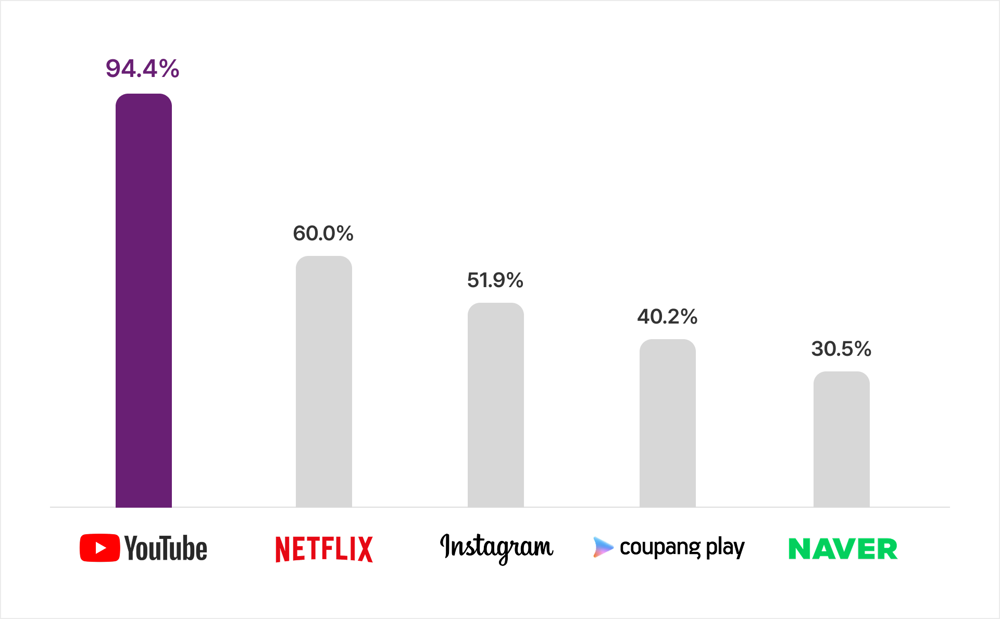

숏폼 콘텐츠는 손수제작물(UCC, user-created content) 혹은 사용자 생성 콘텐츠(UGC, User Generated Contents)의 맥락에서 출발하여, 평범한 창작자들이 제작하는 콘텐츠를 유통하는 것을 목표로 시작한 유튜브나 틱톡 등을 통해 유통되어왔다. 숏폼이란 단어가 처음 등장했을 때는, 레거시미디어에서 편성되는 방송 프로그램보다 길이가 짧은 10분 내외 영상을 두루 일컬었지만, 2016년 틱톡(Tiktok)의 등장 이후 짧게는 15초에서 1분 내외의 영상이 큰 몫을 차지하게 되었다(김인애·강혜원, 2024).
숏폼을 비전문가의 영역으로 치부하던 경향도 옛말이 되었다. 전문적인 콘텐츠 제작자들의 진출로 인해 장르 및 플랫폼 성격에 맞게 숏폼, 미드폼, 롱폼으로 분화되고 있으며, 레거시미디어와 차별화되는 비즈니스모델을 형성하며 주류 콘텐츠로 자리 잡았다. 그 배경은 역시 유튜브의 압도적인 플랫폼 영향력이다. 나스미디어의 「2024년 인터넷이용행태 보고서」에서 한국인의 94.4%가 최근 일주일 간 유튜브로 온라인 동영상을 시청한 바 있다고 응답했다. 이는 2위인 넷플릭스(60%)나 3위인 인스타그램(51.9%)을 크게 웃도는 수치다(그림 1).
[그림 1] 온라인동영상 시청 채널 top5
(출처: 나스미디어, 2024 인터넷이용자조사 NPR)
한국콘텐츠진흥원이 실시한 「2024 온라인동영상서비스 이용행태 조사」에서도 숏폼 콘텐츠 선호도를 묻는 문항에서 영화/드라마/예능 등 레거시미디어 콘텐츠를 재편집하여 짧게 만든 숏폼 콘텐츠를 선호한다는 응답(59.8%)보다 챌린지, 1분뉴스, 숏폼 드라마 등 처음부터 숏폼으로 제작된 콘텐츠를 선호한다는 응답이 78.6%를 차지하면서 영상콘텐츠 산업에서 숏폼 IP가 보여주는 영향력을 잘 보여주었다.
숏폼 IP는 교육, 일상, 뷰티, 웹드라마, 스케치코미디 등 레거시미디어에서 유통되는 거의 모든 장르를 망라한다. 숏폼 IP의 유형을 이해하기 위해서는 먼저 제작 주체를 기준으로 구분할 수 있다. 오혜라·정윤재(2024)는 ‘숏박스’, ‘너덜트’, ‘올리버쌤’, ‘이사배’ 등 TV가 아닌 유튜브에서의 1차 유통을 목적으로 하는 오리지널 콘텐츠 유튜브 채널과 유튜브나 모바일앱 플랫폼의 특성에 적합하게 기존 TV 등의 방송 콘텐츠를 재가공한 클립형 콘텐츠를 공유하는 방송 콘텐츠 클립 유형으로 분류하였다.
오리지널 콘텐츠 유튜브 채널들은 영상 등장인물과 주제에 맞는 특정 상품이나 서비스를 자연스럽게 소개하는 PPL 형태의 브랜드 협업, 유튜브 채널 멤버십 서비스를 통한 유료 구독 수익, 채널의 정체성을 반영한 브랜드 설립을 통한 뷰티, 헬스케어 등 제품 판매업 등을 병행하며 차별화된 수익모델을 만들어가고 있다(오혜라·정윤재, 2024).
한편 숏폼 IP 장르나 콘텐츠 속성은 온라인 참여문화 속에서 확산되는 경향이 강하기 때문에, 참여자들과의 상호작용을 주어진 환경으로 받아들임으로써 창작자가 주도하기보다 이용자의 반응에 유동적으로 반응하는 ‘커뮤니티 중심 스토리텔링’이 중시되는 문화를 특징으로 한다(김해원·백지연·강혜원, 2018; 강혜원, 2024). 레거시미디어에서 편성이나 유통이 채널의 전략에 영향받았다면, 숏폼 IP의 경우 각 채널의 비즈니스 전략에 따라 인플루언서로서 크리에이터 정체성 확립에 중심을 둔 ‘크리에이터 IP’ 채널과 ‘포맷 IP’ 채널로 구분할 수 있다.
‘크리에이터 IP’채널이란, ‘디바 제시카(괴담)’, ‘침착맨(게임, 일상)’, ‘심으뜸(피트니스)’, ‘곽튜브(여행)’ 등 자신의 전문 영역을 중심으로 크리에이터 페르소나와 밀접한 주제의 스토리텔링을 주로 하는 유형이다. 이에 비교되는 ‘포맷 IP’채널은 레거시미디어와 유사하게 포맷의 독창성과 재미가 핵심이 되며, 안정되고 정형화된 포맷을 바탕으로 진행자를 섭외해서 채널을 운영하는 것을 특징으로 한다. 디즈니와 허스트 계열의 A+E 글로벌 미디어(A+E Global Media) 소속 달라스튜디오가 제작했던 ‘네고왕’, JTBC스튜디오 룰루랄라의 ‘워크맨’, 카카오엔터테인먼트 자회사 오오티비의 ‘전과자’ 등의 콘텐츠가 대표적이다. 프로젝트로 출연자가 바뀌어도 포맷의 일관성을 유지할 수 있어 장기적 IP 관리가 가능하다는 면에서 전통적인 TV 비즈니스의 속성을 보여준다.
2025년 현재 숏폼 콘텐츠 시장에서는 셀러브리티 채널과 레거시미디어 출신의 스타PD들이 참여하는 포맷 중심 채널 경쟁이 뜨겁다. 2024년 국민MC 유재석(핑계고)의 유튜브 진출 이래 신동엽(짠한형), 음악인 정재형(요정재형), 박나래(나래식) 등의 채널이 지속적인 성장세를 보이는 한편, <무한도전>을 제작했던 김태호 PD의 제작사 테오(Teo)와 나영석 사단이 주축인 에그이즈커밍(egg is coming)이 운영하는 ‘채널 십오야' 등 제작진 중심 채널들은 멀티플랫폼 활용과 글로벌 유통, 스핀오프 등의 다양한 숏폼 IP 확장 전략을 본격적으로 실험하고 있다. 특히 KBS와 tvN을 거쳐온 이명한 PD, 나영석 PD, 신원호 PD, 이우정 작가가 주축이 된 제작사 에그이즈커밍은 숏폼 IP 확장에 있어 흥미로운 전략들을 가장 적극적으로 보여주고 있다.
2015년 일찍이 네이버TV에서 <신서유기> 시리즈를 송출하면서 다양한 멀티플랫폼 전략을 활용했던 나영석 PD는 2022년 CJ엔터테인먼트 계열 콘텐츠를 송출하던 ‘채널 십오야'를 에그이즈커밍 소속으로 전환한 이후, 2023년 유튜브 콘텐츠 제작시스템을 전면개편하고 새로운 오리지널 유튜브 콘텐츠를 공개해 왔다. 침착맨 채널에 출연해서 나눈 대화를 바탕으로 한 <침착맨에게 배워왔습니다> 시리즈를 시작으로 본격적인 스트리밍 시리즈 진출을 선언한 이후 ‘채널 십오야'는 나영석 PD를 진행자로 내세우고 에그이즈커밍에 소속된 작가와 PD 등 다양한 구성원들의 일상을 자연스럽게 소개하는 <소통의 신>, <에그고등학교 4학년9반-나영석 첫 번째 팬미팅 with uber taxi>등의 시리즈를 방영했다. 이처럼 시청자들과 친밀한 관계를 맺을 수 있는 콘텐츠를 꾸준히 선보인 결과 나영석 PD는 2024년 제 60회 백상예술대상에서 남자예능상을 수상했다.
[그림 2]
채널 십오야 <침착맨에게 배워왔습니다>
(출처: 채널 십오야)
2024년 1월에 방영된 <나나투어 with 세븐틴>은 유튜브-TV 편성을 병행하던 기존의 플랫폼 활용 전략을 넘어서 글로벌팬플랫폼 위버스에 유료 확장 버전을 유통하는 실험이 돋보인 사례이다. 인기 K-POP 그룹 세븐틴과 협업한 여행리얼리티 프로그램을 제작하여 유튜브와 tvN채널에 본방송을 편성하였고, 코어 팬덤을 위한 확장판 콘텐츠를 위버스에서 유료로 구매할 수 있게 한 것이다. 뿐만 아니라 프로그램 홍보를 위해 사전에 채널 십오야 채널에 세븐틴 멤버들이 출연하여 여행에 대한 뒷이야기를 나누는 스트리밍 방송을 시행하는 등 멀티플랫폼 활용의 새로운 선례를 남겼다.
[그림 3]
아마존프라임 <서진이네>
(출처: primevideo)
에그이즈커밍은 방탄소년단 멤버 뷔, <기생충>에 출연한 배우 최우식, <이태원클라쓰>의 박서준 등 글로벌 스타들이 출연한 리얼리티프로그램 <서진이네> 시리즈를 한국 예능 최초로 글로벌 OTT 플랫폼 아마존프라임에 배급했다. 해외 현지에 가상의 식당을 오픈해서 운영하는 고비용 프로그램을 제작하는데 있어, 국내 케이블채널과 글로벌 OTT에 유통하여 고수익을 낸 것이다. 이 과정에서도 역시 주요 출연진들이 출연하는 유튜브 오리지널 콘텐츠를 제작하여 시너지 효과를 얻었다. 한편, <지락이의 뛰뛰빵빵(지구오락실)>, <삼시세끼 light(삼시세끼)>, <콩콩밥밥(콩콩팥팥)> 등 기존의 IP 출연진을 유지하되 제작비를 크게 절감한 스핀오프 시리즈를 제작함으로써 인기 IP의 방송 주기를 줄이면서 팬덤을 유지하는 한편, 제작 비용의 유연화를 꾀했다.
[그림 4]
채널 십오야 <콩콩밥밥>, <지락이의 뛰뛰빵빵>
(출처: tvN)
오늘날 숏폼 IP는 과거 비전문가 중심의 산업, 혹은 2차 콘텐츠 유통 채널의 입지에서 벗어나 가장 최신의 영상콘텐츠 비즈니스 모델을 실험하는 각축장으로 자리잡았다. 나아가 많은 숏폼 IP들은 탄탄한 구독자 커뮤니티를 바탕으로 캐릭터 MD나 채널 주제와 결부되는 생필품을 직접 기획해서 생산하는 제조업, 팝업 등 오프라인 체험 이벤트를 유기적으로 결합하면서 영향력을 확대해나가고 있다. 새로운 수익모델을 한창 실험하고 있는 숏폼드라마 시장의 성장을 고려한다면, 숏폼 IP의 전망은 레거시미디어 시장을 충분히 위협할 만 하다. 따라서 기존의 레거시미디어 콘텐츠 생산자들도 유기적으로 멀티플랫폼을 활용하고, 팬덤과의 관계망을 탄탄하게 할 전략을 본격적으로 수립해야 할 것이다.
- 강혜원(2024). 메타버스 기반 크리에이터의 다중플랫폼활용전략 - <마인크래프트>를 활용한 커뮤니티중심 스토리텔링 사례를 중심으로. <대중서사연구>, 30(3), p.89-122
- 김해원·강혜원·백지연(2018). 크리에이터에게 이용자와 상호작용한다는 것은 무슨 의미인가. <방송과 커뮤니케이션>, 19(2), p.49-90
- 김인애·강혜원. (2024. 12. 27). 2023년과 2024년의 OTT 이용행태 비교분석: 시성비와 가성비의 줄다리기. , (179). 한국콘텐츠진흥원.
- 나스미디어(2024). <2024 인터넷이용자조사NPR>
- 오혜라·정윤재(2024). 오리지널 콘텐츠 유튜브 채널은 브랜드화가 가능한가? <광고학연구>, 35(1), p.1-29
- 한국콘텐츠진흥원(2024). <2024 온라인동영상서비스 이용행태 조사>